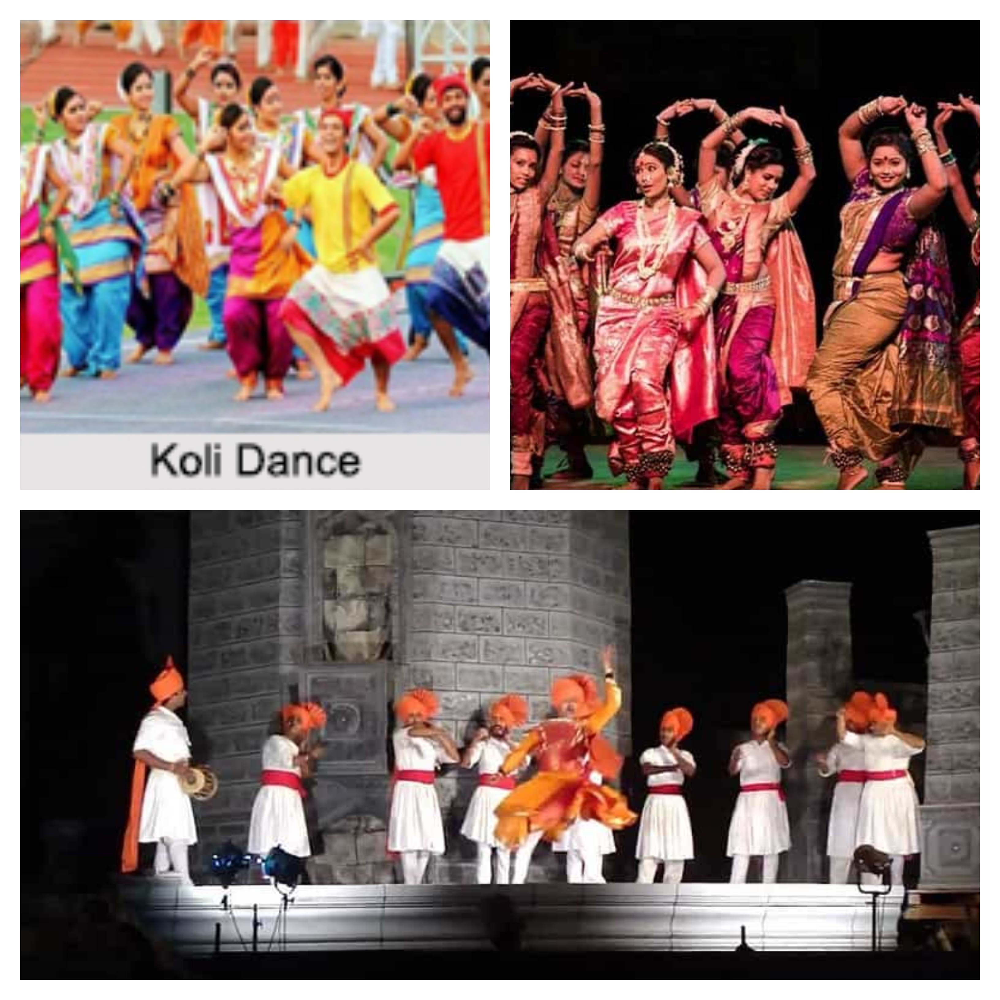

Dance
Gifted with its rich culture and traditions, Maharashtra has different types of dance forms. Povada is the dance form that showcases the lifetime achievements of the Maratha ruler Shivaji Maharaj. Lavani and Koli dance forms entertain the Maharashtrians with its mesmerizing music and rhythmic movements. Koli is the dance form of Koli fisher folk of Maharashtra. The community has its own distinct identity and lively dances. The dance incorporates elements that this community is most familiar with - sea and fishing. Povadas are presented in the Marathi ballad form. This dance form describes the events in the life of the great Maratha ruler, Shri Chhatrapati Shivaji Maharaj. Tamasha - The word tamasha in Persian language means fun and entertainment. The tamasha dance form has been believed to be derived from the ancient form of Sanskrit drama - the 'Prahsana' and the 'Bhana'.
